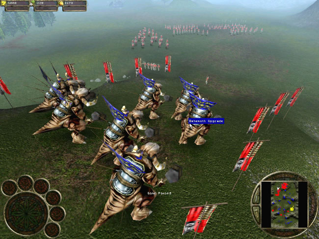
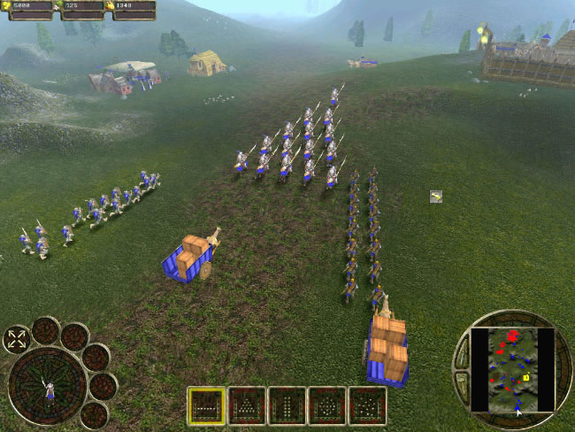
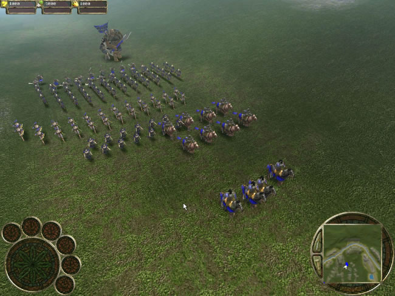
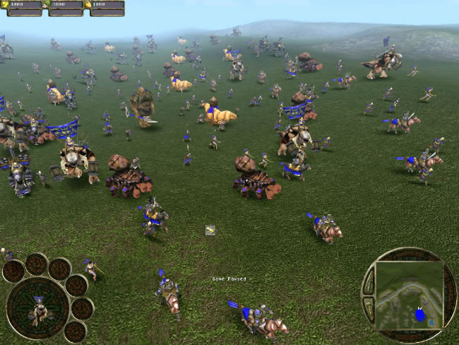
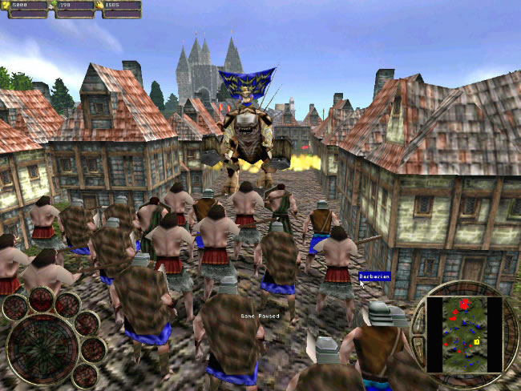

Игры бывают хорошие, бывают плохие, но почему никто не сможет сказать. Есть люди, которые говорят, что раньше хорошие игры были, а сейчас только одна из сотни заслуживает инсталляции. Есть и их оппоненты, считающие, что будущее за современными играми. Признаюсь сразу я отношусь ко второй категории геймеров. В данный момент игры сыплются одна за другой и причём различных жанров. Нельзя однозначно утверждать эта игра плохая, эта хорошая, в каждой игрушке есть свои минусы, но присутствуют и плюсы, иначе и быть не может. Но в этой статье я не собираюсь говорить о том, какие игры заслуживают вашего внимания, а какие нет. Зачем это мне. Моей задача является подробное рассмотрение недавно вышедшей стратегии Warrior Kings. Хочу сказать сразу и по честному игра мне не понравилась, ну не захватила она меня даже чуть-чуть, но чтобы не быть голословным разберу всё по порядку.
Эх, надоели борзописцы.
Сюжет. Какие ассоциации возникают у вас, когда вы слышите это слово? Лично у меня приятные. Толпы писателей, причём умных начитанных людей, трудятся над созданием интересной истории которая и будет заложена в основу будущей игры. Некоторые считают, что интересный сюжет нужен только в квестах и в ролевых играх, а стратегиям он не нужен. Видимо того же мнения придерживались и те люди, которые писали сюжет для игры Warrior Kings. Другого объяснения я не нахожу столь бездарно придуманной истории заложенной за основу игры.

Милые собачки. А вот и обещанная дымка.
Время игры средневековье, да это именно те времена, когда были великие рыцари, победоносные крестовые походы и кровавая инквизиция. Когда жизнь ничего не стоила и отнималась у человека безнаказанно. Но перейдём непосредственно к сюжету игры. Один человек лидер могущественного клана, к сожалению убит, у него остался сын Артос (мда, сюда бы ещё Партоса с Арамисом). Ну и как положено сын мстит за погибшего отца, ну и попутно зарабатывает себе славу и бесконечную власть над империей, уничтожив естественно всех кто встанет у него на пути. А теперь вопрос на засыпку, на чьей стороне будет выступать игрок? Правильно на стороне незаслуженно обиженного Артоса. И целью будет являться уничтожение злого и ненавистного деспота и захват власти над всей империей. Чтобы народу жилось сладко и хорошо. Вот и трудиться не надо. Придумали стандартный сюжет, добавили монстров и всё можно как говорится сдавать в печать. Так и поступили разработчики игры Warrior Kings.
Дань моде.
Я тут заметил небольшую закономерность. Разработчики начинают всё больше и больше делать стратегии не в изометрии, а в чистом 3D. Что это? Дань моде или так действительно лучше, удобнее. Вращаться вокруг своей оси, приближаться, удаляться, смотреть на происходящее под разными углами. Надо ли это в стратегиях? Зачем вырисовывать каждого рыцаря, если они все на одно лицо. Это уже футбольный симулятор какой-то. Но господа разработчики игры Warrior Kings видимо так не считают. Игра выполнена в полном 3D и все вышеупомянутые вращения, наклонения и т.д. и т.п. здесь присутствуют.

Армия выставлена очень хитро. На самом деле расстановка практически ничего не значит.
Один мой друг считает, что человек сумевший хорошо и правдоподобно нарисовать лошадь может стать великим художником. А я немного изменил эту теорию и перенёс на игры и смотрите что получилось. Если в игре с 3D графикой красиво и главное правдоподобно нарисовано небо, значит графика здесь уже хорошая. С Warrior Kings меня постигло разочарование. Какая то голубая тряпка вместо неба натянута над головой и по ней плывут не облака, а скопление бесформенного и ужасающего дыма, не напоминающего даже тучи. Ещё более отвратный характер всё это приобретает с наступлением темноты. Когда этот дым превращается в грязное скопление пыли, напоминающее городской смок последней стадии нежели грозовые тучи. Земля, тут разработчики схалтурили ещё больше. Единственное что я могу отнести в плюс в плане графики, так это красивые спецэффекты. Довольно правдоподобно выглядят взрывы и огонь. Лёгкая дымка, сквозь которую проглядывает далеко стоящий юнит. Так же неплохо, но всё же далеко от идеала, прорисованы непосредственно воины, строения и оружие.
AI. А он здесь есть?
Вы будете смеяться, но и с искусственным интеллектом в этой игре тоже полная халтура. Более глупого врага я ещё не видал. Мало того врага, свои люди тупы настолько, что не понимают простых вещей. Авторы решили внести некую долю оригинальности и записали в крестьян помимо мужчин ещё и женщин (тут феминистки аплодируют), но сразу говорю этот трюк уже использовали разработчики Age of Empires 2 (кончили аплодировать). Так что и здесь у авторов не получилось соригинальничать, хотя признаться шанс был. Оставили бы для слабого пола только лёгкую работу (сеять и собирать урожай), а деревья таскали бы только мужики, появилось бы уже разнообразие, а значит и дополнительная доля интереса. Но нет женщины, надрываясь, на ровне с мужиками ворочают тяжеленные деревья.

Опять обман зрения. В битвах главную роль играет число.
Мало того, у авторов припасён ещё один оригинальный сюрприз. Обычно в стратегиях (исторических) крестьянин срубил дерево и несёт его на склад, либо в городской центр и после этого оно используется на благо отечества. Нет, сказали разработчики игры Warrior Kings, всё это уже старо как мир и требует существенных изменений. Ну и что, сказали, сделали, получайте. Теперь крестьянин (мужчина/женщина) несёт товар на склад или в амбар, но он (пшеница, дерево) не подлежит использованию, до тех пор, пока не будет доставлен на другой, более главный склад, перевезут его на телеги специальные работники. Спрашивается зачем? Разве до этого было плохо? Эта система не улучшила игровой процесс, а наоборот.
Теперь пару слов о нападениях на Артоса (то бишь на вас). Мне интересно, о чём думали авторы, создавая такого безмозглого противника, когда небольшие вражеские группы, тупо идут прямо на вашу защитную башню, осознавая, что через мгновение скончаются. Я понимаю если бы они были заминированы (в средние века), а тут как сумасшедшие с мечом. Причём когда в них начинают стрелять лучники, враги продолжают своё парадное шествие, не удосужившись даже отпрыгнуть или отбежать. И это искусственный интеллект? Может ли это вообще называться хоть каким ни будь интеллектом?

Издалека воины выглядят очень красиво.
Бои и нападения на вражескую базу. Мне интересно разработчикам известно значение слова стратегия? В их понимании это выглядит так, налепил огромное количество юнитов и двинул всю эту ораву на врага, победит тот кто больше успел наклепать воинов, а не тот у кого лучше развито стратегическое мышление. Выходит эта игра на скорость? Миссия началась и сразу же надо приступать к созданию армии, чтобы не попасть впросак. Так где же тут стратегия??? Вы скажете, что и в других играх такого типа идентичная система, согласен, но надо же что-то менять, а мы всё на месте топчемся. Враг как был дураком, так и остался, в боях как побеждала самая большая армия, так и продолжает побеждать.
Единственным исключением являются осады замков, когда на смену лучникам и мечникам приходят осадные орудия (катапульты, тараны). Признаюсь честно штурм замка с использованием этой техники меня заворожил, когда вступают в силу настоящие спецэффекты и это единственное что можно поставить в плюс битвам в Warrior Kings.
Ещё хочется отметить весьма богатую систему абгрейдов, напоминающею Age of Empires и Star Craft, видно что в этом плане разработчики потрудились (ведь могут когда захотят).
Непослушные воины.
Cкажу вам чесно, вы не раз вспомните разработчиков нехорошим словом во время игры, когда ваши боевые единицы будут в наглую отказываться выполнять приказы и игнорировать клики мышью. Когда небольшая группа ваших юнитов бродит по лесу и вдруг увидит вдали многочисленный отряд врага, то можете не портить кнопку мыши, толку всё равно не будет, ваш отряд героически отправится на верную смерть. И игрок с этим ничего не сможет поделать.

А вблизи… Сборище угловатых прямоугольников.
Управление (если это можно назвать управлением), в основном ведётся с помощью мыши, но иногда на помощь может прийти и клавиатура.
Ложка мёда в бочке дегтя.
Нет, я не оговорился. Это новый вариант народной пословицы, который блестяще подходит к звуковому сопровождению в Warriors Kings. Приятная, разнообразная и не надоедающая музыка, но при этом местами слишком короткая. Хороший звук, бренчание мечей, свист стрел, грохот взрывов всё это присутствует на своём законном месте. Не придерешься.
Uninstall.
Я не зря назвал эту часть статьи именно так. Это заключение к обзору по игре Warrior Kings. Я не знаю на какого геймера рассчитана эта игрушка с её бесконечными минусами и малочисленными плюсами. Warrior Kings это игра в которой умело ужились средняя графика, тупой AI, жутко неудобный интерфейс. Но вместе с тем хорошая музыка и неплохой звук. Игрушка получилась сырой и не готовой к выходу, скорее всего это произошло из-за плохого финансирования и недостатка денег. У разработчиков не было времени заниматься качественной работой, и тестированием, не было времени на проработку всех мелочей, которые и составляют интересную и качественную игру, какой Warrior Kings при всём своём желании я назвать не могу. Судьба этой игры ясна, она будет безжалостно задавлена гигантами современной игровой индустрии. А другого и быть не может. Потому что нельзя подходить к созданию игр так халтурно. Остаётся надеяться, что другие проекты компании Black Cactus не повторят судьбу своего младшего брата.